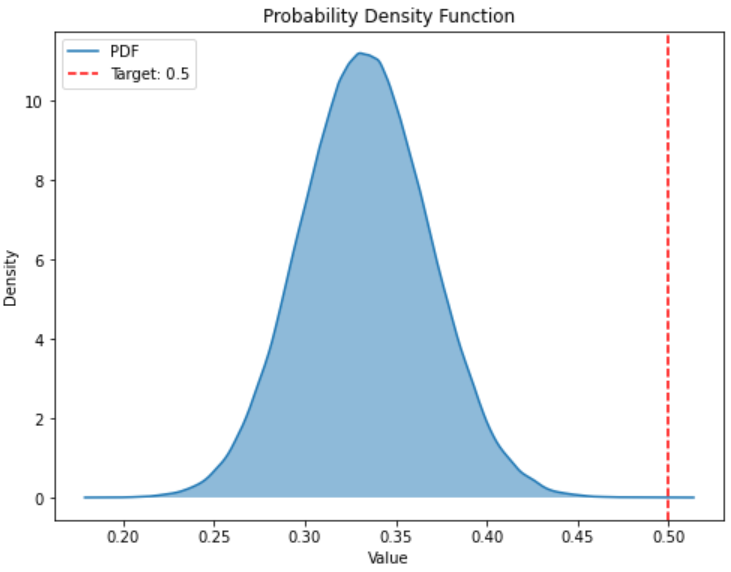
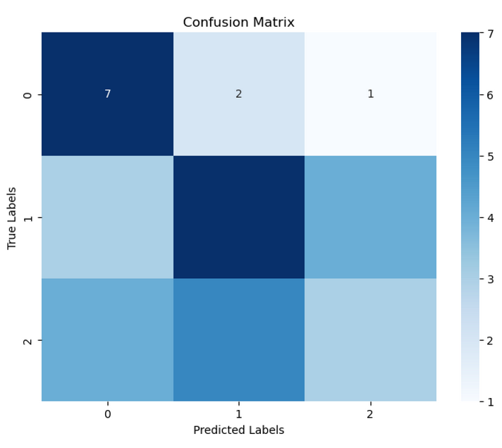
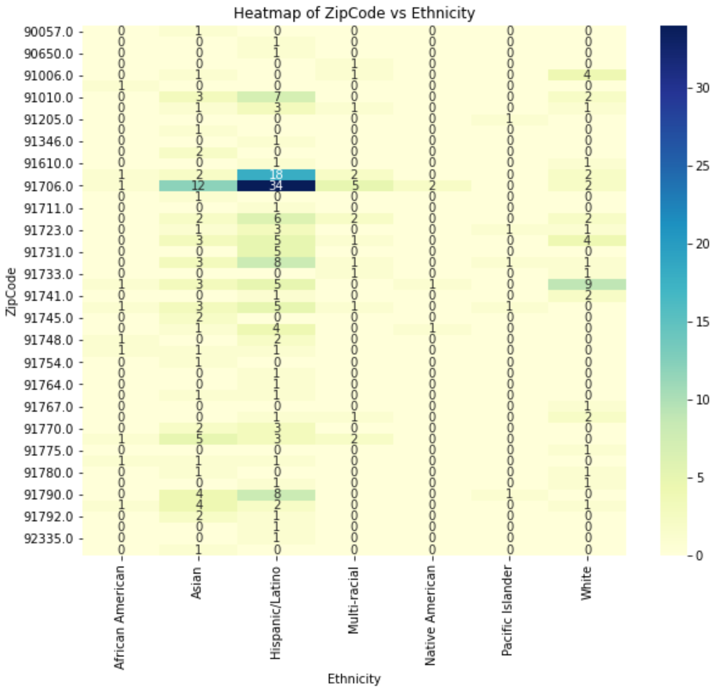
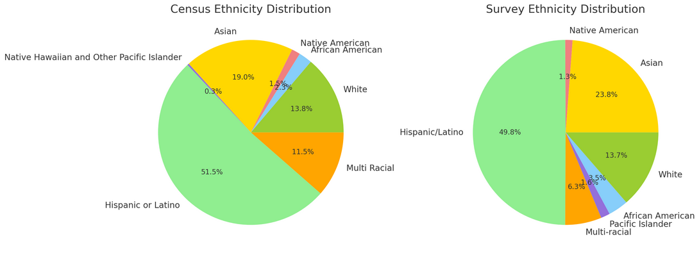
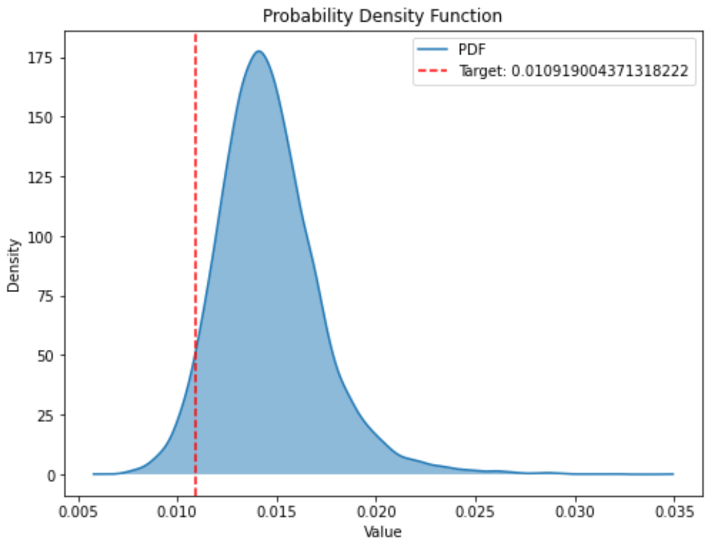
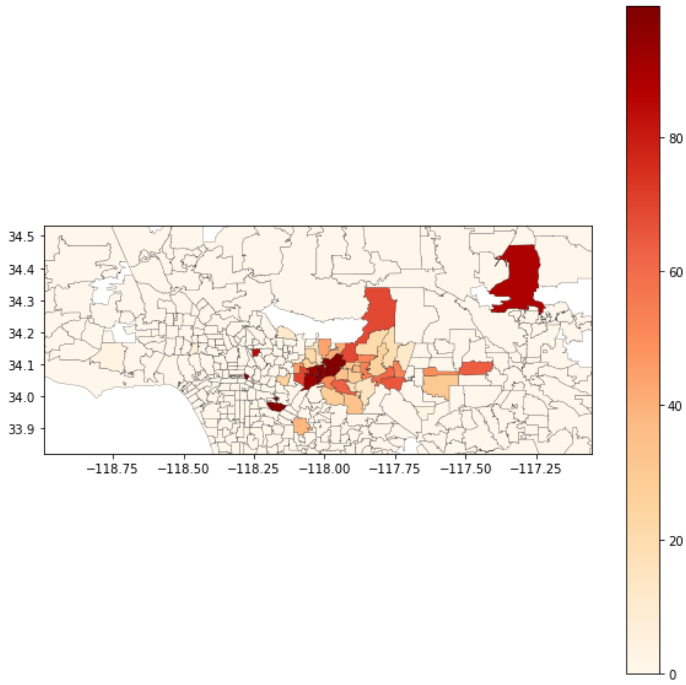
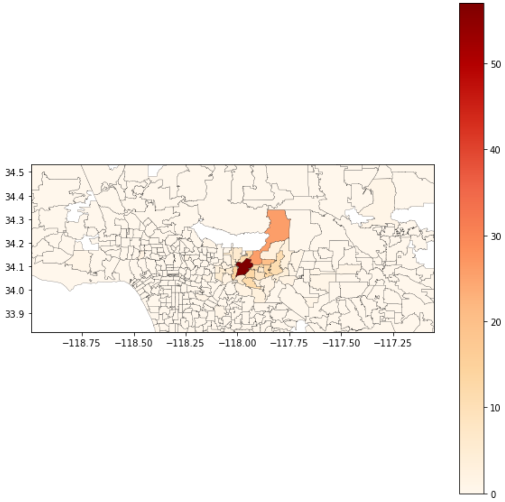

I volunteered and performed Data Analysis for Los Angeles Food Bank Shepherd’s Pantry from Summer 2020-2022. This included aggregating and analyzing data to identify client usage and satisfaction for their three locations, developing rapport with clients by volunteering weekly in food distribution and preparing a comprehensive analytics package for the Executive Director based on the needs and demographics of the clientele.
Below I go into more detail on four questions I answered and the various methods I used to answer them to the benefit of the Shepherd’s Pantry Los Angeles Food Bank.
- What are the top needs of Clients?
- Are the Needs Of Clients Location Specific?
- Are Certain Ethnic Groups disproportionately represented in Shepherd’s Pantry Clientele?
- Does Shepherd’s Pantry meet the needs of its surrounding area or is there an Outreach Problem to address?
1. What are the top needs of Clients?
Though there were complications in gathering data, such as requiring versions in English, Spanish, and Mandarin, after acquiring and tabulating each location’s survey results, finding the answer to this important question would prove to be the easiest of the above.
For each of the questions regarding need, I made a bar chart to display each respective answer’s percentage of occurrence.
For example here is a plot displaying the distribution of results for the question on Client’s preferences for Potential Shepherd’s Pantry Programs:

This chart enabled the Shepherd’s Pantry Executive director to make an informed choice on which programs to invest in. In particular it appears that nutrition and English classes, as well as someone to pray with are all top needs and priorities of Shepherd’s Pantry clientele.
2. Are the Needs Of Clients Location Specific?
The methodology of answering this question proved more engaging.
After vectorizing the needs and location data per client, I trained a tensorflow model to find out with what accuracy said model could match the input of the needs of a given client and with the Shepherd’s Pantry location (Baldwin Park, Glendora or Irwindale) which that client came from.
The higher the accuracy of said model the more location specific we may consider the needs of Shepherd’s Pantry clientele to be.

The model was able to match the needs of the clients to their Shepherd’s Pantry location with 50% accuracy. I then used a Monte Carlo simulation to demonstrate the significance of this accuracy. For each Monte Carlo Instance a model would determine each client’s location through random selection rather than through training on the associations between need and location. The distribution of each Monte Carlo Instance’s accuracy is plotted above along with the accuracy of our trained model for contrast. Our model’s accuracy of .5 is 99.998th percentile in this distribution, implying that it is extremely unlikely that needs are not location specific, such that we may confidently assert that the needs of Shepherd’s Pantry clients are location specific.
Now the natural follow up question is to what extent are the needs of clients location specific? By diving into our models behavior with more specificity through a Confusion Matrix we can answer this question.

This Confusion Matrix gives us the additional context of how location specific client’s needs are per location. We can derive from the confusion matrix that ‘0’ or Baldwin Park has the most location specific needs since our model had the most success matching client’s needs to its location, followed by ‘1’ or Irwindale, and the location with the least location specific client needs, ‘2’ or Glendora.
This insight enabled me to assign the appropriate amount of weight to location when analyzing client needs in my report to the Shepherd’s Pantry Executive Director.
3. Are Certain Ethnic Groups disproportionately represented in Shepherd’s Pantry clientele?
For these last two exemplary questions, I utilized the US Census Bureau’s API in order to contrast their data with the data collected by my survey.
First I created a heatmap of the distribution of client ethnicity per Zip Code in order to establish a baseline understanding of the ethnic demographics of the Shepherd’s Pantry clientele.

My initial thoughts are to contrast the survey’s ethnic demographics per zip code with the US Census Bureau’s ethnic demographics per zip code. However, I quickly realized that such a comparison will not account for the high variance that comes with the low sample size of many of the zipcodes in my heatmap.
Rather than comparing ethnic demographics per zip code, I decided to assume the distribution of client’s zip codes is appropriate, with no zip code over or under represented (an assumption put to the test in my answer to the next exemplary question).
This allowed me to create an expected ethnic distribution from the census data by calculating a weighted average of the census ethnic distribution per zip code, weighted by the number of clients from said zip code. I then plotted the expected census ethnic distribution next to the survey’s ethnic distribution for contrast.

While visually the census and survey ethnic distributions appear similar, I decided to substantiate that observation with a Monte Carlo simulation.

Each Monte Carlo instance represents the variance of the ethnic distribution of a sample of 321, the number of clients in the survey, from the calculated expected ethnic distribution based on the US Census Bureau’s data and client count per zip code. The distribution of said variances is plotted above along with the survey’s variance from the census for contrast. The survey’s ethnic distribution variance of approximately .0109 is 5th percentile in this distribution. This implies that we may claim with confidence that the visual differences demonstrated in the contrasting pie charts of ethnic distribution between the survey and census data were largely due to sample size. So we have substantiated the claim that if zip codes are assumed to have been appropriately represented then there are no ethnic groups which are disproportionately represented in the Shepherd’s Pantry Clientele.
4. Does Shepherd’s Pantry meet the needs of its surrounding area or is there an Outreach Problem to address?
To answer this question I want to create an expected client count metric per client zip code. I used as input to the expected client count metric the distance of a zipcode’s population weighted longitude and latitude centroid from the nearest Shepherd’s Pantry, its population count, unemployment rate, and median income. I then plotted a heatmap of the expected client count metric per zip code (below on the left) next to a heatmap of the survey’s client count per zip code (below on the right) for contrast.


The visual revelation of the amount of zip codes under-represented in the Shepherd’s Pantry clientele based on their need for assistance and distance from Shepherd’s Pantry enabled me to inform the Executive Director of Shepherd’s Pantry on which particular communities would most benefit from the attention of his outreach campaign efforts.